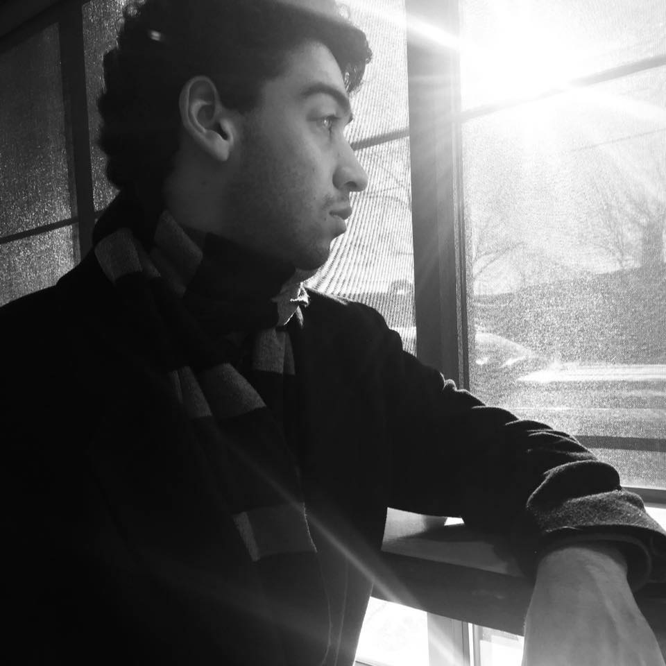
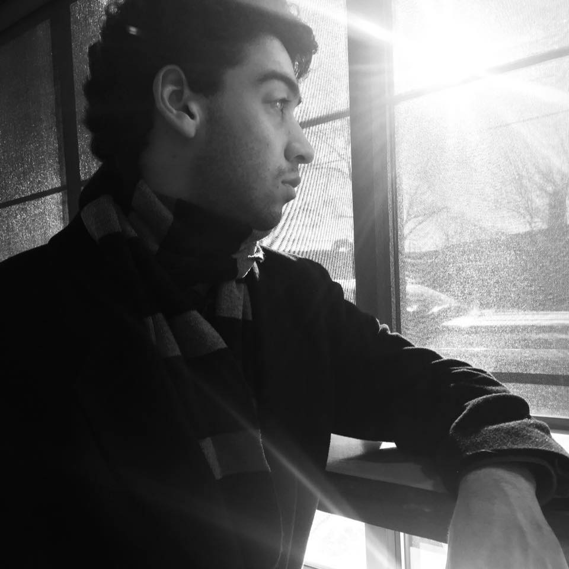
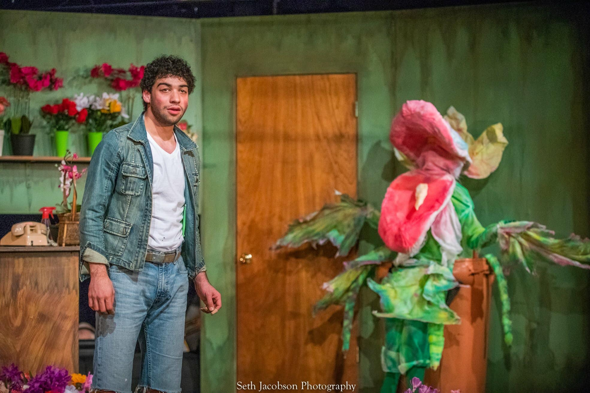

|
|
|
|
|---|---|---|---|
| Javascript | About Me | Apps |

 

My name is Dean Hernandez. I am a Theater Major at URI with concentrations in Acting Performence
as well as Costume and Lighting Design. Theater is a huge part of my life. Since starting college,
i have worked in many theaters, both community and professionalm, in many aspects including acting,
stagecraft, lights, and costumes.
Costumes is my primary focus in design. I have designed for shows as small as 2 actors,
with one production having 25 actors who required at least 2 costumes each. I love acting and will continue to do it as
much as I can. For a career at my age, design is a more realistic way to push myself into the industry.
Some of my favorite shows I have worked on include The Hunchback Of Notre Dame, Young Fankentsein,
Little Shop of Horrors, and Mary Poppins.
A Little Night Music, University of Rhode Island, 2019
Little Shop of Horrors, The Contemporary Theater Company, 2018
Back to home page